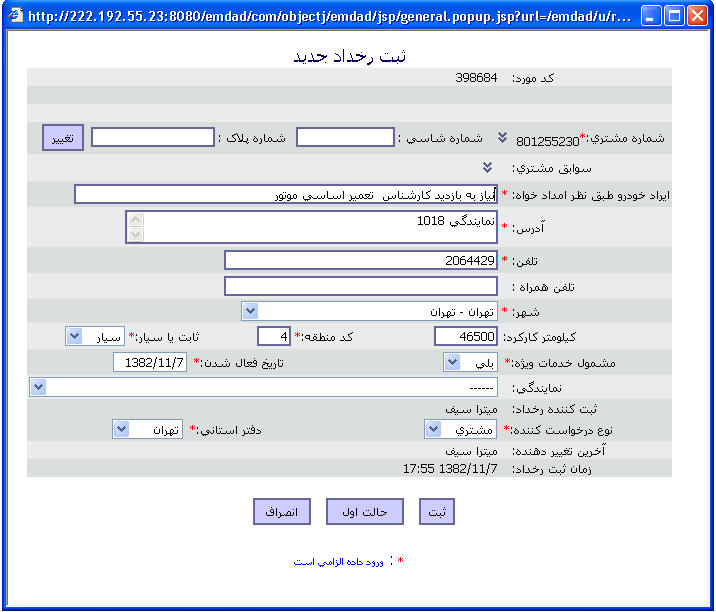

|
ایجاد یا اصلاح اطلاعات در این صفحه کاربر میتواند یک اطلاع را ایجاد و یا اطلاع ایجاد شده را اصلاح کند. صفحه اصلاح رخداد را در نظر بگیرید که در شکل زیر آمده، کار بر میتواند مقادیر قبلی را مشاهده کرده و تغییر دهد. در تمام صفحات ایجاد یا اصلاح 3 دکمه وجود دارد : 1- ثبت: اطلاعات درون فرم را ثبت میکند. 2- حالت اول: مقادیر درون فرم به حالت اول خود (یعنی قبل از تغییر ) برمیگردند. 3-انصراف: چیزی ثبت نمی شود یعنی کاربر انصراف خود را از اعمال انجام داده اعلام میکند.  |